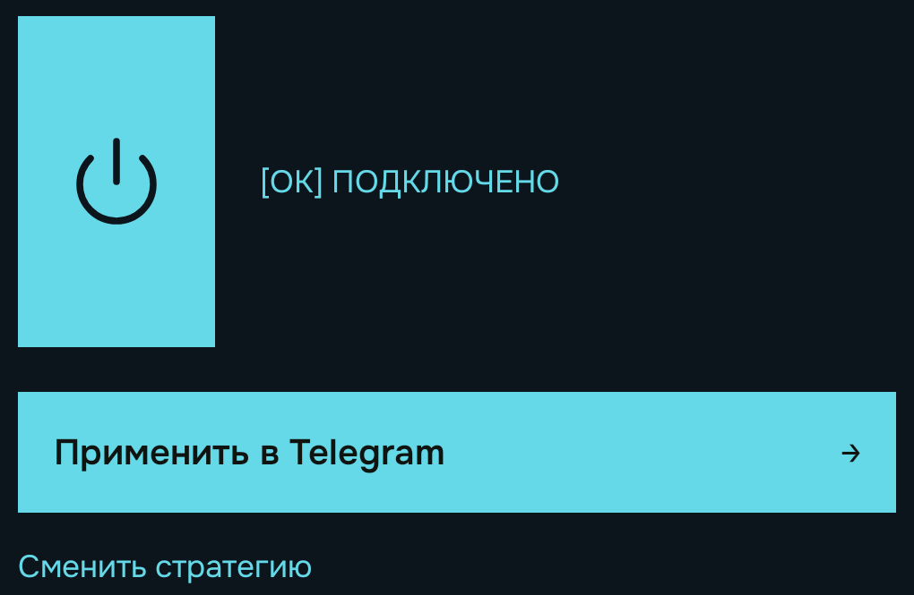
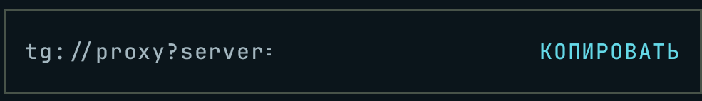

ByeBye TGWS Proxy
TG-WS
Локальный прокси
для Telegram
Запусти TG-WS и нажми «Применить в Telegram». Ссылку можно скопировать для ручной настройки.


TG-WS
Запусти TG-WS и нажми «Применить в Telegram». Ссылку можно скопировать для ручной настройки.

